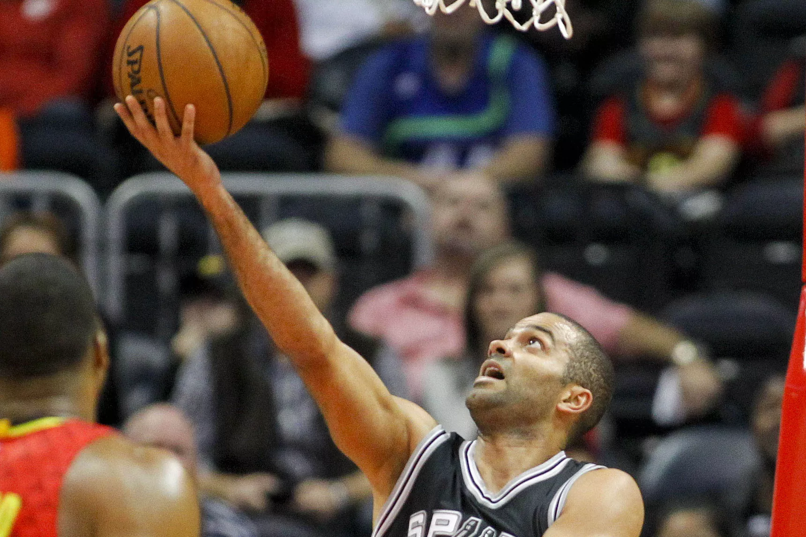
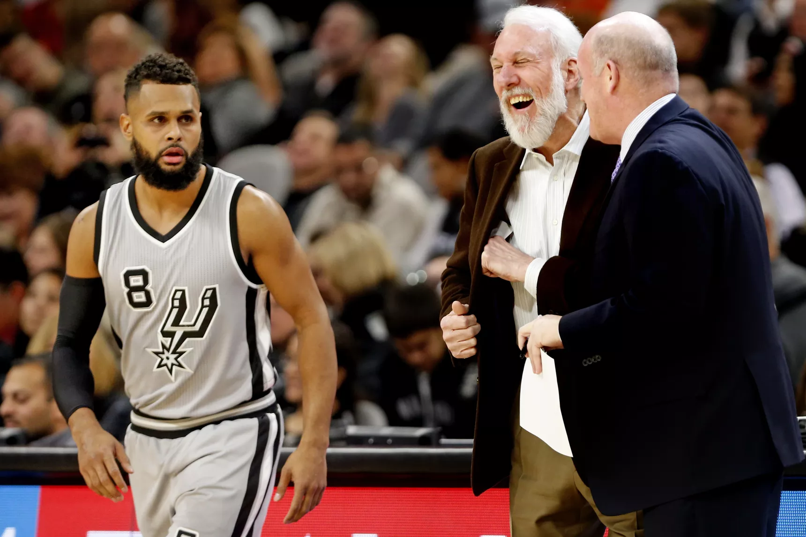

San Antonio vs. Charlotte: Spurs to 102-85 victory over Hornets
The Spurs didn't have many shots fall for them in the first half against the Hornets, but a third quarter run led by the reserves, namely Davis Bertans, pushed the home team ahead, and the fourth quarter turned it into another laugher as San Antonio outscored Charlotte by 20 after intermission.
The Spurs opened the game hitting their first three shots on the way to a 7-2 lead before the Hornets went on a little 10-4 run of their own to take a 12-11 lead midway through the first quarter. After a timeout, Patty Mills scored 8 points, and Davis Bertans (who got some early run with David Lee missing his first game of the season with a knee contusion) made his presence felt with a high-flying dunk over Roy Hibbert. The Hornets were led by 7 points from Kemba Walker, and the score was tied 24-24 at the end of the first quarter.
The Spurs were a little sloppy to start the second quarter, but two threes from Kawhi Leonard and one from Danny Green helped the Spurs take a 35-33 lead five minutes into the quarter. There wasn’t much ball-movement from either team until the final few minutes of the half. Both teams traded baskets before Walker banked in a three on a potential four-point play. He missed the ensuing free-throw, and the Hornets ended a rather uninteresting half of basketball up 50-47. The Spurs hit 7 of 20 from three in the half but shot less than 39% overall.
The Spurs continued to receive but miss open shots to start the third quarter, and fortunately for them so did Charlotte. A three from Pau Gasol and a couple of FT’s helped the Spurs tie things up at 54 a piece before Pop called a timeout. Both teams continued to shoot poorly until Davis Bertans completed a four-point play and hit another three on consecutive plays to get the Spurs up 68-60 with two minutes left. It was just the spark the Spurs needed, and they entered the final frame with a 73-64 lead.
Bertans scored the Spurs’ first five points of the fourth quarter, Dewayne Dedmon got an alley-oop, and the lead was quickly stretched to 80-66. A Leonard block of a Hibbert dunk led to a three from Jonathon Simmons, and the route seemed to be on...until Bertans took a breather and the Hornets cut what was an 18-point lead down to 12. Bertans promptly returned and drew three more free throws. Another Davis three from a few feet behind the line got the lead back to 18 with 4:11 left, and then the route really was on. Bertans finished with a career high 21 points, and the Spurs won 102-85.
Check back later for more on this one. The Spurs return to action on Tuesday to take on the Milwaukee Bucks. Be sure to check out Spurs Live before and after that game to see Matt Bonner’s studio debut!
Why the Spurs are SO GOOD this season!

So, the question before us: Why are the 2016-17 Spurs so good?
The easy answer is to say offense, because it just so happens that the Spurs’ Offensive Rating of 109.9 (per NBA.com’s Stats Index) is the best in franchise history. But offensive efficiency is up across the league, to the point where the Spurs only rank fifth in the NBA. That 109.9 would’ve tied for second last year, and led the league in each of the past two seasons before that. Conversely, their Defensive Rating of 101.6 looks mediocre, it’d have ranked eighth last year and 12th two seasons ago, but this season it’s fourth.
However, even in a league that’s growing ever more homogenized, with everyone firing away from outside and learning to eschew long twos, the Spurs are still finding a way to stand out. What specifically are they doing well?
For starters, they’re shooting threes with historic accuracy, nailing 40.7 percent of their attempts. Last season’s Golden State Warriors canned 41.6 percent, Alvin Gentry’s Phoenix Suns of 2009-10 hit 41.2, and our all-time champions, believe it or not, had a Curry on the roster, only it was Stephen’s father Dell on the 1996-97 Charlotte Hornets, who sank an incredible 42.8 percent of their threes as a team.
What that accuracy means is that while they’re only 21st in attempts, they’re actually 14th in makes, knocking down 18.6 freebies per game. The last time a Spurs team made that many at the charity stripe, you had to go back to the 2004-05 season, with Tim Duncan close to his prime and Ginobili and Parker just entering theirs.
Their ability to make threes and finish at the rim has the Spurs tied-for-second in overall field goal percentage, despite their love affair for mid-range twos (though they have solid shooters taking the majority of those, too). The team ethos for moving the ball and looking for great shots instead of settling for good ones has enabled the Spurs to be in the top-five in field goal percentage for years. Their last season outside the top-five was 2009-2010 (where they ranked sixth) and you have to go back to 2007-08 for their last finish outside the top-10.
So what all that efficiency boils down to is this. The Spurs make a couple more buckets per game than their opponents, a .5 more threes per night, and about two-and-a-half more free-throws. Those fractions may seem marginal, just a point here and a point there, but those fractions add up and often make the difference between a win and a loss or a close win and a comfortable one.
Power Rankings, Week 12: Spurs regaining some street cred

Remember a few weeks ago when everyone was worried about Kawhi Leonard being frozen out on the defensive end and lethargic offense from basically everyone except Leonard and the bench? Yeah, times have changed. The starters are beginning to look like a cohesive unit that’s been together for more than a couple of months, and the defense has gone from a decent-but-not-championship-caliber unit at the beginning of the season back to the terror the Spurs have always prided themselves on being.
Sure, the current stretch of schedule isn’t exactly the toughest, but back in November the Spurs were caught taking their opponents for granted and either losing or having to rally back late to beat lesser teams. That is no longer the case, as the Spurs have held a 20 point lead in seven of their last eight games and are leaving no doubt who the better team is. They look like a team that is having fun out there, and that is a very good sign as the second half of the schedule draws near.